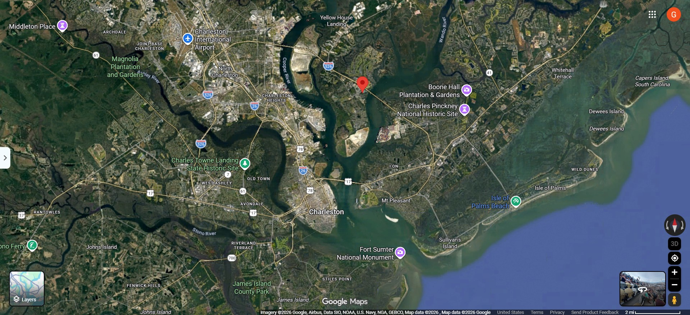

At some point in your life you’ve heard the word “metadata” in the news. But what is it exactly? Who would want your metadata? And why should you care? In this blog post, I will be using a real-life photo as an example of what kind of data can be extracted from your camera roll. The photo is from a Tyler Childers concert I attended with my sister back in 2023 (and we’ll be able to confirm this further down).
What is Metadata and Why Does it Matter?
Simply put, metadata is data about data. It is information about content that is not contained within the content itself. Think of it as reading the nutrition facts label on a gallon of milk at the grocery store. Instead of containing proteins, carbs and fats, metadata contains information about when a file was created, what device it was created on, and where the device was at the exact time of file creation. That could be valuable to advertisers, law enforcement, even foreign militaries and intelligence agencies.
”We Kill People Based on Metadata”
A direct quote from former NSA director, General Michael Hayden, during a panel debate regarding privacy at Johns Hopkins University in April 2014. I bring this up not to scare you, but rather inform you of what metadata can be used for. From the most “benign”, like advertising, to the most extreme (assassinations, artillery strikes, drone strikes, etc).
This isn’t some cheap shot at the US, it is the new reality of modern warfare that all nation states engage in. At intelligence agencies across the world, there typically exists a job role called Targeting Officer. These officers rely on both closed and open source methods to track down persons and networks of interest. Metadata is one of the pieces used to solve this intelligence puzzle. According to CIA’s own job summary:
As a Targeting Officer at CIA, you will identify the people, relationships, and organizations having access to the information needed to address the most critical U.S. foreign intelligence requirements and find opportunities to disrupt terrorist attacks, illegal arms trade, drug networks, cyber threats, and counterintelligence threats.
What often surprises people is how much OSINT (Open Source Intelligence) is used by law enforcement and the IC (Intelligence Community). Movies often depict advanced satellite imagery and asset recruitment to achieve their goals. Sometimes all it takes is an OPSEC (Operational Security) slip-up. A cell phone someone forgot to power-off or place in a faraday bag. A message sent at the wrong time. Or a picture posted to social media.
Viewing Metadata with exiftool
Here is the original photo we took at the concert that I converted to jpg format:
To download exiftool, use your distro-specific package manager if you are on Linux. For Windows, navigate to the official exiftool page and select the Windows 32-bit or 64-bit download options. You will be linked to a SourceForge download which did give me a heart attack at first, but the download is legit. After the tool is installed on your local machine, you can view the metadata of a specific file by providing it as a positional argument:
PS C:\Users\XXX\Downloads\exiftool-13.59_64\exiftool-13.59_64> .\exiftool.exe ..\..\IMG_3211.HEIC
ExifTool Version Number : 13.59
File Name : IMG_3211.HEIC
Directory : ../..
...
Make : Apple
Camera Model Name : iPhone 13 Pro Max
Orientation : Rotate 90 CW
...
Modify Date : 2023:08:19 19:45:09
Host Computer : iPhone 13 Pro Max
...
Exposure Time : 1/99
F Number : 1.5
Exposure Program : Program AE
ISO : 125
Exif Version : 0232
Date/Time Original : 2023:08:19 19:45:09
Create Date : 2023:08:19 19:45:09
Offset Time : -04:00
Offset Time Original : -04:00
Offset Time Digitized : -04:00
Shutter Speed Value : 1/99
Aperture Value : 1.5
Brightness Value : 3.218865718
Exposure Compensation : 0
Metering Mode : Multi-segment
Flash : Off, Did not fire
...
Acceleration Vector : -0.00485334266 -0.8886951214 -0.4077024758
...
Lens Info : 1.570000052-9mm f/1.5-2.8
Lens Make : Apple
Lens Model : iPhone 13 Pro Max back triple camera 5.7mm f/1.5
Composite Image : General Composite Image
GPS Latitude Ref : North
GPS Longitude Ref : West
GPS Altitude Ref : Above Sea Level
GPS Speed Ref : km/h
GPS Speed : 0
GPS Img Direction Ref : Magnetic North
GPS Img Direction : 116.6891785
GPS Dest Bearing Ref : Magnetic North
GPS Dest Bearing : 116.6891785
GPS Horizontal Positioning Error: 4.685543588 m
XMP Toolkit : XMP Core 6.0.0
Creator Tool : 16.6
Date Created : 2023:08:19 19:45:09
...
Run Time Since Power Up : 7 days 13:54:29
...
Create Date : 2023:08:19 19:45:09.500-04:00
Date/Time Original : 2023:08:19 19:45:09.500-04:00
Modify Date : 2023:08:19 19:45:09-04:00
GPS Altitude : 9 m Above Sea Level
GPS Latitude : 32 deg 51' 41.00" N
GPS Longitude : 79 deg 54' 14.75" W
Circle Of Confusion : 0.007 mm
Field Of View : 69.4 deg
Focal Length 35mm Equiv : 5.7 mm (35 mm equivalent: 26.0 mm)
GPS Position : 32 deg 51' 41.00" N, 79 deg 54' 14.75" W
Hyperfocal Distance : 3.29 m
Light Value : 7.5
Lens ID : iPhone 13 Pro Max back triple camera 5.7mm f/1.5
Even excluding some of the output, that is quite a lot of information. So what pieces of information would a person or nation state be after specifically? I’m sure you’ve noticed some important things already, let’s go over them:
- Host Computer: I now know this image was created on my sister’s iPhone 13 Pro Max.
- Exposure time, F number, and ISO: With a 1/99 shutter speed, 1.5 aperture, and 125 ISO, I can assume this image was taken in a low light setting.
- Run Time Since Power Up: Interestingly enough, the HEIC format will record how long your phone has been running since you last powered it on. My sister’s phone was running for exactly 7 days, 13 hours, 54 minutes and 29 seconds.
- Create Date: This picture was taken at exactly at 9 seconds past 7:45PM Eastern on August 19th, 2023. The time of day validates the assumption made from the camera settings above.
- GPS Altitude: I know that the iPhone was at some level of altitude. The reason I say “some” is because I was pretty sure I was higher than 30 feet above sea level in that picture. I’ve been wrong before though.
- GPS Position: Here is the obvious one, the exact position of the iPhone at the moment the picture was taken.
Converting HEIC GPS to Decimal Degrees
The GPS data in the images metadata is denoted in Degrees, Minutes, and Seconds (DMS) by default. In order to view these coordinates in Google Maps, we’ll need to convert them to Decimal Degrees (DD) format. I found this site that performs the conversion automatically. When I enter my coordinates, I get the decimal degrees 32.86138889, -79.90409722. All that’s left to do is head to Google Maps and enter the coordinates. The most shocking part is how accurate the coordinates being recorded are. Google Maps places me at the exact seat I had at the Credit One Stadium on Daniel Island. This also validates the exact viewing angle shown in the picture too:

Removing GPS Metadata
Fortunately, most social media platforms are good about automatically stripping metadata to help protect their users. The same cannot be said about that same image sitting on your phone’s hard drive or cloud storage. exiftool can solve this problem. To erase all GPS metadata, use the -gps:all= flag:
PS C:\Users\XXX\Downloads\exiftool-13.59_64\exiftool-13.59_64> .\exiftool.exe -gps:all= ..\..\IMG_3211.HEIC
1 image files updated
Removing All Metadata While Retaining Values of Importance
To remove even more information, use the -all= flag. Before using this flag, however, be sure that you are not removing sensitive color data from your image. Some fields are required in order for the image to properly render. In this case with HEIC, and despite the ICC_Profile warning, I did not see any degredation in color. What I did notice was the image now being rotated 90 degrees counter-clockwise in my Google Drive afterwards:
PS C:\Users\XXX\Downloads\exiftool-13.59_64\exiftool-13.59_64> .\exiftool.exe -all= ..\..\IMG_3211.HEIC
Warning: ICC_Profile deleted. Image colors may be affected - ./IMG_3211.HEIC
1 image files updated
That’s no good. To fix this, let’s first note the value of the Orientation field before we remove any metadata:
PS C:\Users\XXX\Downloads\exiftool-13.59_64\exiftool-13.59_64> .\exiftool.exe -Orientation ..\..\IMG_3211.HEIC
Orientation : Rotate 90 CW
With the correct orientation known, proceed with deleting all metadata:
PS C:\Users\XXX\Downloads\exiftool-13.59_64\exiftool-13.59_64> .\exiftool.exe -all= ..\..\IMG_3211.HEIC
Warning: ICC_Profile deleted. Image colors may be affected - ./IMG_3211.HEIC
1 image files updated
Now we can simply add the Orientation metadata value back to the image:
PS C:\Users\XXX\Downloads\exiftool-13.59_64\exiftool-13.59_64> .\exiftool.exe -EXIF:Orientation#=6 ..\..\IMG_3211.HEIC
1 image files updated
- -EXIF:Orientation:
-EXIF(Exchangeable Image File Format) specifies the type of tag that will be created.Orientationis the tag name to be created and added to the image. - #: This symbol disables print conversion so the value being written is its raw value. This is important because the valid values for Orientation are integers 1-8, and our input must be interpreted as such.
- 6: Referencing exiftool’s official tag name documentation, the integer 6 correlates to
Rotate 90 CW, the original value that we read prior to deleting all metadata.
Much better:
Mitigations
Modern smart phone settings will provide users with the option to enable or disable geotagging for photos. Some people enjoy the convenience of seeing where a photo was taken, and that is ok. Personally, I choose to disable geotagging for photos on my iPhone. To disable geotagging features on iOS, go to the Settings app and navigate to the following:
- Privacy & Security > Location Services > Camera
Under Allow Location Access, select Never.
On Andriod, the settings names and locations may vary between phones. As a general rule, find the camera app and select the Settings icon. From there find the “GPS Location Info” or “Locations Tags” setting and disable it. Alternatively, you can outright disable Location Services under the phone’s general Settings app.
Do you always need to post ASAP? No. You don’t. A simple but effective mitigation is to simply stop posting photos/videos the second you take them. Instead of immediately posting your international trip to your Instagram story, post them to your profile once you’re back home. Beyond the potential GPS coordinates embedded in media, someone can determine your location based on what can be phyiscally seen. That in correlation with the timing of your post could put you at risk. This type of OSINT is a skill you can develop. If you haven’t heard of Geoguesser, I’d highly recommend you do a search on YouTube for the best geoguessers in the world. With the advent of AI/ML, this becomes even easier to do for the layman.
The metadata of files you generate are the digital breadcrumbs used by advertisers and adversaries to determine your patterns of life, your personal network, even your next move. By using exiftool you can check your own digital footprint, as well as glean information from any file you come across.